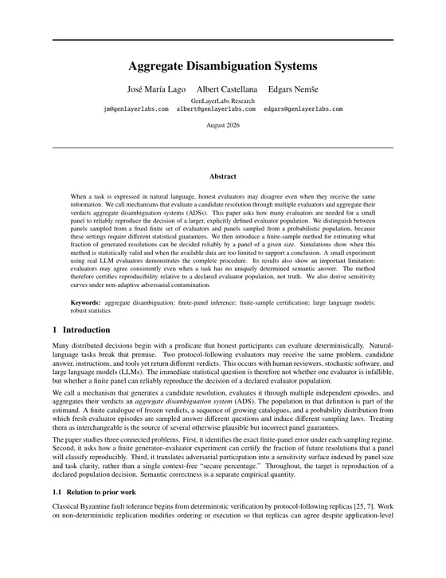

可复现性统计可复现性GENLAYER LABS RESEARCH
这项探索的简要导览：
有些决定可以轻松自动化。
明确的规则付款到账了吗？
→
一个答案是。
论证脉络
六个问题，一个系统。
每一章提出一个问题并作出回答。这里把所有答案一次列出；页面其余部分是证据，每章末尾都是承载证明的论文。
00 · 机制
GenLayer：一条会判断的区块链。
GenLayer 是一条区块链：即使问题没有可证明的答案——工作是否按约交付、货物是否在途中损坏——它的合约也能作出决定并执行。它的共识机制是 Optimistic Democracy：先由一名领导者提出答案，再由若干验证者组成的评估组投票——每人运行自己选择的 AI 模型；在结果最终生效之前，它始终可以被挑战。
一个决定，从头到尾。
01可复现性
评估者意见不一，甚至有人作弊，这个决定还能信任吗？
简短回答
能——因为信任变成了一个数字。论文精确计算出随机抽取的小评估组与其声明的裁判群体一致的频率，即使里面混入了对抗者。
把一个有争议的问题抛给一大群诚实的评估者，可能 65 人说是、35 人说否。而 GenLayer 每次只问随机抽出的一小撮人。这一小撮人的答案，能信到什么程度？
用大白话说
先设想合约声明的全部可能裁判 (评估者群体)。如果这个群体整体倾向某一边，一个随机抽取的小评估组有多大概率站到同一边？这个概率就是可复现性——它衡量的是与群体是否一致，而刻意不是真伪。论文对它作了精确计算，也包括对抗者始终投票反对诚实多数的最坏情况。
试一试
调整群体倾向、对抗者比例和评估者人数。
先猜一猜
对抗者把 65/35 的群体扭成了 55/45。十一名随机裁判投票。他们仍与诚实多数站在一起的概率有多大？
约 63%。十一名裁判便宜，但结果不稳。换成 1,537 名裁判，同一个数字就是 99.996%。在下面试试看。
评估组仍与诚实多数一致的概率—
这是论文中精确非自适应模型的最坏情况：每一张对抗票都投向诚实多数的对立面。
更进一步
阅读论文 · AGGREGATE DISAMBIGUATION SYSTEMS ↗
论文究竟证明了什么
精确的公式：任意规模的评估组与声明群体一致的频率，有无腐化两种情形都算得出来；以及一套办法，用来认证未来有多少决定能可复现地解决（有限评估组错误概率、敏感度曲面、运营认证书）。
为什么评估组越大越有帮助？
抽的裁判越多，评估组偏离整个群体所倾向那一边的概率就越小。
什么样的决定更容易解决？
群体本身越一致，得到稳定结果所需的裁判就越少。
可复现就代表答案正确吗？
不是。它的意思是：随机抽取的评估组倾向于与声明群体站在同一边。答案是否为真，是另一个需要靠经验检验的问题。
如果部分评估者是对抗者，会怎样？
当群体中被腐化的比例已知、且发生在抽取评估组之前，论文能精确算出最坏情况下的错误率。系统的容忍度是算出来的，不是假设出来的。
02等价原则
两个 AI 的答案算不算同一个，由谁说了算？
简短回答
由合约决定。每次调用都声明什么算“同一个答案”，验证者按这条声明的规则判断领导者的提案——这就是等价原则。
一张票是从哪儿来的？向 AI 问同一个问题两次，回来的措辞就不一样。经典区块链会把任何差异都当成故障，连诚实的工作也一并拒掉。
用大白话说
解法是等价原则：合约在每次调用时声明什么算作“同一个答案”。领导者实际执行任务并提出答案，其余人重跑一遍，再按这条规则作出判断。标准定得好，每一张票都承载着判断；定得不好，票要么一致却毫无信息，要么把诚实的答案全部否掉。
试一试
切换标准，看投票如何变化。
1 合约声明什么算作同一个答案
llm_call( task = "交付的报告符合要求吗？", equivalence = "与你自己重新执行的结论一致", )
# 或声明： · ·
2 领导者执行并提出答案
“符合要求——定价与竞争分析扎实；监管部分单薄，但确实覆盖了。”
3 五名验证者重新执行，并对领导者的答案投票
更进一步
阅读白皮书 · 等价原则 ↗
白皮书究竟规定了什么
合约在每次调用时声明一个标准，验证者据此判断领导者的输出是否为可接受的答案——必要时对照自己重新执行的结果。
这是真实的语法吗？
不是，只是示意。真实的 GenVM 合约是运行在沙箱里的 Python 类；但机制本身——为每个 AI 操作逐次调用声明标准——与白皮书的规定完全一致。
为什么会有两名验证者拒绝一个诚实的答案？
因为他们自己重跑之后，诚实地得出了相反的结论。这是分歧，不是作弊：它绝不会被惩罚，而“可复现性”一节的数学正是为吸收这种分歧而设计的。
谁来选定这个标准？
由合约开发者定，而且逐次调用分别声明：同一份合约里，不同调用尽可以各用各的标准。
为什么不干脆要求每个验证者都得出完全相同的输出？
对 AI 调用和网页读取来说，不存在唯一正确的输出：两份都正确的摘要，措辞也不会一样。确定性的代码仍然逐字节检查。
03自适应
十一名评估者就够用时，何必动用一千名？
简短回答
只买利害关系所值的评估。每一步——停止、再评估或重新生成——最好的一步就是预期总损失最小的那一步，论文把它算了出来。
每一次评估都是付费的工作。200 美元的退款用不着 1,537 名裁判的评估组；两万美元的资金调动也许就值得。
用大白话说
每一步，系统都可以就此停下、为同一个答案多买几名裁判（再评估），或者花钱换一个新答案（重新生成）。最好的一步是让预期总损失最小：裁判费用，加上判错的平均代价。论文算出了这个理想基准；真实的申诉行为是否贴合它，则是下面“激励”一节要回答的问题。
试一试
这个决定值得请多少名评估者？
先猜一猜
一个有争议的问题上押着 2,000 美元。每名裁判收费 10 美分。在哪里停下最划算？
95 名裁判：全部算下来约 12 美元。停在 11 名，会留下 297 美元的预期损失；用到 767 名，则要付 76.70 美元的费用，却几乎消不掉什么。
每名评估者收费 10 美分。评估组的规模取协议规定的轮次大小，从 5 到 1,537。
总计 = 费用 + 风险，按轮次计算。在黑线降到最低处停止。
停止规则—
更进一步
ADAPTIVE ECONOMIC DISAMBIGUATION · 论文即将发布
论文究竟证明了什么
一条精确的规则，判定哪一步的预期损失最低；一批在答案变化时仍然有效的认证书；以及一个证明：GenLayer 的升级阶梯所做的工作，不到完全知情选择的六倍（G-AE-ADS 规划器，六竞争调度）。
为什么系统可以先从少量评估者开始？
多数决定花不了几个钱。只有当收益盖过成本时，才值得加裁判。
什么时候值得增加评估？
当赌注够大、或证据够弱，值得再花钱看一眼的时候。
为什么要区分重新评估当前答案和生成新答案？
它们买的是不同的东西：再核查是为同一个答案添证据，重新生成则是换掉答案本身。论文在花钱之前先给两者各自定价。
实际运行的网络真的遵循这条理想规则吗？
这里并没有证明这一点。这条规则只是规划者的基准；网络要贴合它，前提是有人私下觉得提出恰当的申诉对自己划算。这正是“激励”一节研究的问题。
04代币经济学
是什么阻止单一参与者用海量节点接管网络？
简短回答
投票权是被锁定的资本，而不是电脑。想要接管，就得买下——并押上——全部 GEN 中巨大的一份，而这种代币没人能随意增发。
到这里为止，我们都假定选票不容易买。可是计算机很便宜：一个人就能跑一千个节点。
用大白话说
所以投票权归于被锁定的 GEN——一种没人能随意增发的代币。验证者至少锁定 42,000 个有可能赔掉的 GEN (质押)；其他人则可以把自己的 GEN 委托给信任的验证者 (委托)。想要控制网络，就得买下全部 GEN 中极大的一份，并把它放在网络随时可以销毁的地方 (罚没)。
看一看
看同一个攻击者，在两个不同的世界里试图夺取控制权。
世界一 · 一个节点，一票
假选民不要钱，攻击者就成批地造
正在批量生成假选民，每个成本约 0 美元…
世界二 · GENLAYER：一枚锁定代币，一票
每一票都必须锁定 GEN——一种没人能随意增发的代币
攻击者不得不买下的 GEN 占全部的比例
同样的攻击放在这里：买下并锁定全部 GEN 的 0%。一旦作弊，这份质押就会被销毁（罚没）。
取自论文中固定的表格：验证者最低 42,000 GEN，委托最低 42 GEN，解绑 7 个纪元，欺诈最高罚没 5%。
更进一步
GEN TOKENOMICS · 论文即将发布
论文究竟规定了什么
支撑这座法庭的经济引擎：创世供应固定为 42 亿 GEN，增发率从 9% 向 4% 递减（是上限，不是承诺），奖励来自手续费与增发，加上质押规则，以及只惩罚可证明的不当行为、绝不罚没诚实分歧的处罚机制。
付给验证者的钱从哪里来？
两条来源：交易手续费，以及沿固定曲线从 9% 递减至 4% 的增发（这是上限；销毁只会把它压低）。DAO 只靠手续费供给，所以它的收入随真实使用量而动。
验证者到底因为什么才会受罚？
诚实的错误与不当行为，定价截然不同。投票落败只会销毁手续费量级的金额，绝不动本金。怠工罚没 1%，可证明的欺诈罚没领导者 5%，申诉失败则没收保证金。分歧被吸收，不当行为才受罚。
单靠平方根加权，就能防住一个人分身出许多虚假身份吗？
不能，论文自己也这么说。凹权重只是削弱集中度；真正阻止拆分的是：每一个身份都必须锁满 42,000 GEN、自己跑节点、自己承担罚没。
不运行验证者节点也能获得奖励吗？
可以。委托 42 GEN 及以上，奖励会自动复利。也不用比价佣金：分成比例由协议写死，验证者仓位里的每一枚 GEN 收益率都一样。
05激励
谁来出钱挑战一个错误的决定？
简短回答
赔付让谁觉得划算，谁就来。申诉奖励的安全区间很窄：要大到让有依据的怀疑愿意出手，又要小到让盲目滥发照样亏钱。
还记得那次 3 比 2 的投票吗？这么接近的结果值得再看一眼。可是发起挑战的人必须锁定一笔钱 (保证金)，而且可能血本无归。他为什么要主动出面？
用大白话说
论文把两件听起来相似的事分开：系统什么时候需要再开一个评估组，和某个人什么时候能从发起挑战中获利。两者会朝两个方向背离——该提却没人提的申诉（没人付出代价），和毫无意义的申诉（有人白花钱）。杠杆在于赔付金额：太低，疑虑就沉默；太高，盲目挑战就成了一门生意。
试一试
回报大小决定了哪些怀疑值得付诸行动。
谁会发起申诉—
更进一步
MULTI-AGENT APPEAL GAMES · 论文即将发布
论文究竟证明了什么
为理想停止规则与真实申诉行为之间的落差给出精确定价（实现遗憾）；证明没有任何一组固定的保证金与奖励能适配所有工作负载；以及经过校准的赔付能弥合这道落差的条件。
什么会让人愿意申诉？
他的胜算、奖励、押上的保证金、申诉的成本，以及他对结果本身是否另有私利。
能否设计激励，让有用的申诉真正发生？
在一定条件下可以。论文给出了校准奖励的办法，让私人激励贴合系统确实需要再开一个评估组的时机。
为什么多个潜在申诉者很重要？
一旦很多人都能申诉，他们的选择就会互相影响：观望、抢跑、重复劳动。机制必须为这三者都定价。
为什么不直接提高申诉保证金，把轻率的申诉挡在门外？
保证金越高，越能为评估组买单、越能阻吓灌水，但它也占住了资本：收益的算术可以一模一样，而付得起申诉成本的人却急剧减少。
06形式化验证
协议真的按设计运行吗？
简短回答
每次改动都重新检验。一个机器检验的 Optimistic Democracy 模型随部署合约的演进反复对照——而且已经抓到过真实的缺陷。
以上都是关于设计的数学；而网络实际运行的代码每周都在变。所以我们为 Optimistic Democracy 建了一个可由机器检验的模型 (TLA+ 模型检验)，并随着合约的演进反复对照。
253次提交的协议演进，均按同一组机器验证的性质重新检验。
1个竞态被抓出：两条代码路径在处理同一个申诉事件。
3条规则被一次热修复悄悄破坏，由模型检验发现。所有发现均已在实现中确认并上报开发团队。
更进一步
LAYERED FORMAL VERIFICATION · 论文即将发布
这项验证究竟覆盖了什么？
一个分层的模型：一张规范的状态图、对照它检查的 TLA+ 规约，以及把每一次状态转移映射到某个固定版本 Solidity 代码的对应关系。
这能否证明代码没有任何漏洞？
不是。它证明的是：关于某个固定版本的一个明确模型，具备一组明确声明的性质。正是这种限定，才让这些主张变得可检验。
为什么要反复验证，而不是一次证明了事？
协议一直在演进。每个版本都用同一组性质重新检查，于是悄无声息的偏移会表现为一次检查失败，而不是一次线上事故。
这套语义回归测试抓到过真实问题吗？
有：上面提到的那个竞态，以及三条被破坏的不变式。全部已在实现中确认，并上报给开发团队。
所有术语，一处说清